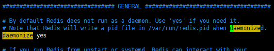
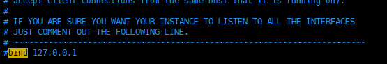
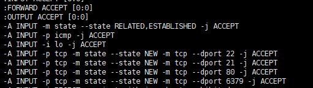
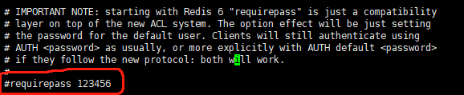

Redis简介
redis是一个基于key-value形式进行存储的内存型数据库
优点：效率高 理论值：每秒10k数据读取
Redis是一个NoSql数据库,将其作为缓存工具使用（把某些使用频率较高的内容存储到Redis中)
Redis持久化策略
rdb
默认的持久化策略；每隔一段时间后把内存中数据持久化到dump.rdb文件中
缺点：数据过于集中,可能导致最后的数据没有持久化到dump.rdb中（可以使用save或BGSAVE命令手动持久化）
aof
监听Redis的日志文件，监听如果发生了修改，删除，新增命令，立即根据这条命令把数据持久化
缺点：效率降低
Redis数据类型
String 、Hash、 List 、 Set、 SortedSet
Redis安装
Linux版本：CentOS7.6 x64
Redis版本：6.0.9
安装gcc
1 | # 查看gcc版本是否在9.3以上，centos7.6默认安装4.8.5 |
解压编译
将下载的压缩包上传到/usr/local目录下，解压压缩包
1 | tar zxf redis-6.0.9.tar.gz |
进入解压后的目录进行编译
1 | cd redis-6.0.9 |
指定目录安装
1 | make install PREFIX=/usr/local/redis |
至此，Redis安装完毕。
启动Redis
前台启动
1 | cd /usr/local/redis/bin/ |
ps: 这种启动方式不能关闭控制台，否则Redis就直接退出了
后台启动
从 redis 的解压目录中复制 redis.conf 到 redis 的安装目录
1 | cp /usr/local/redis-6.0.9/redis.conf /usr/local/redis/bin/ |
修改 redis.conf 文件，把 daemonize no 改为 daemonize yes

ps: daemonize是用来指定redis是否要用守护线程的方式启动。
1 | ##启动命令： |
远程客户端连接Redis
修改redis安装目录下的redis.conf文件，将bind:127.0.0.1注掉（使所有的ip都能访问到redis server）

打开防火墙：修改 /etc/sysconfig下面的iptables文件，添加
1 | -A INPUT -p tcp -m state --state NEW -m tcp --dport 6379 -j ACCEPT |

最后运行 systemctl restart iptables 命令重启即可。
Redis密码设置
如果需要设置Redis的密码，编辑redis.conf文件，找到requirepass，将注释放开并且更改密码。

1 | ###连接： |